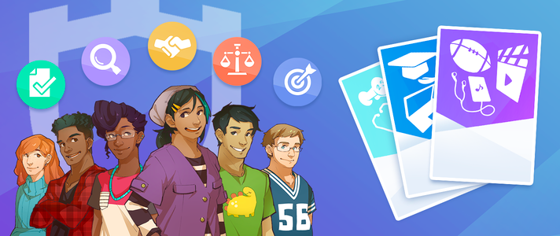
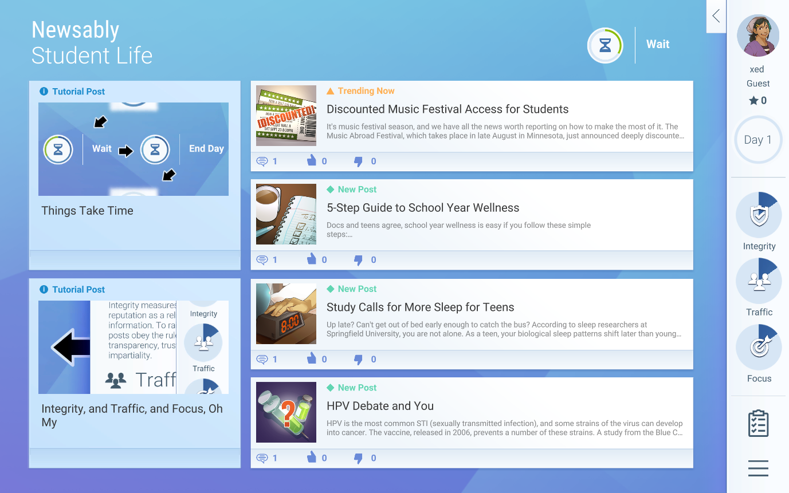
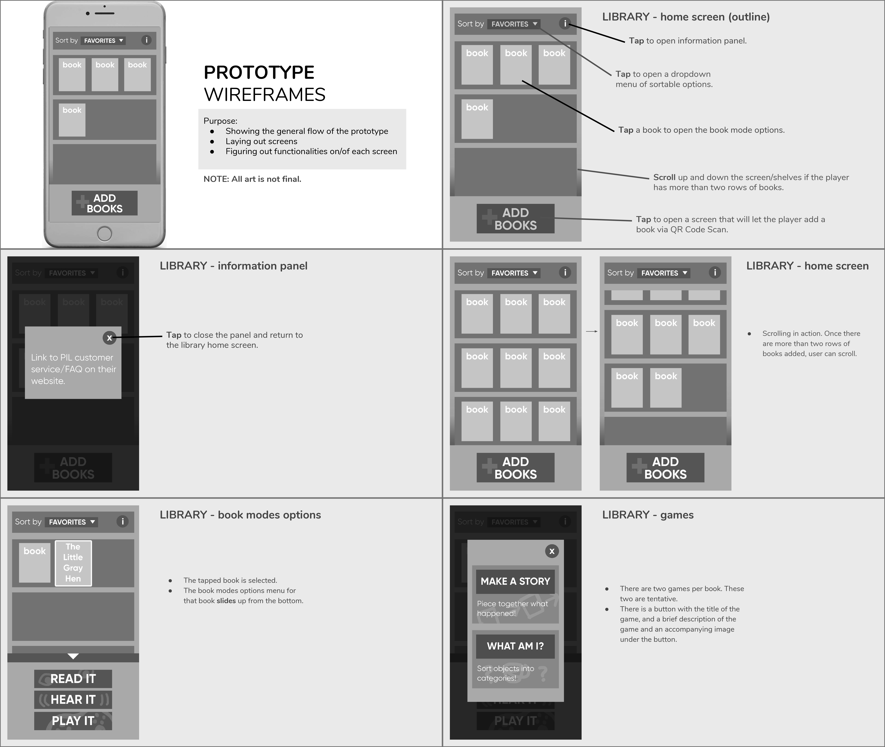
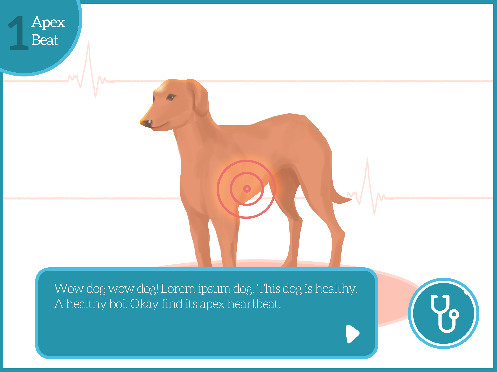
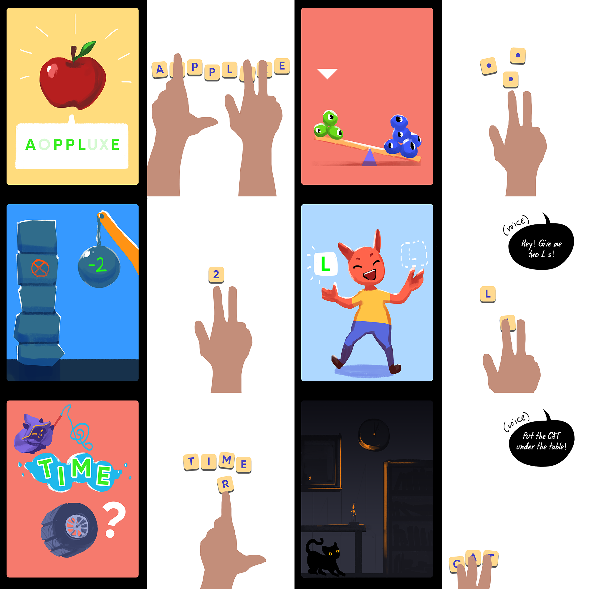
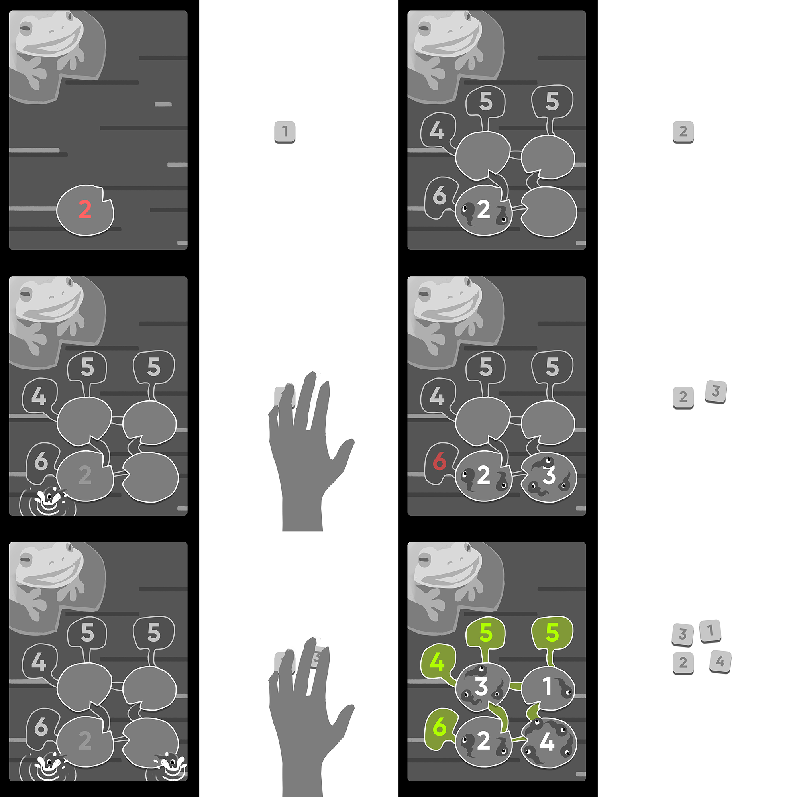

At Filament Games, my responsibilities as a UI/UX Designer (or Visual Interaction Designer) include designing any UI elements, implementing interactive animations, making wireframes and storyboards (both internal and client-facing), and adapting the game layouts in multiple resolutions to determine that they can be played on different devices: web, mobile, and desktop. Because my skills include visual art and programming, I also frequently rapidly prototype as a secondary programmer, guide the aesthetic of the project, or script templates for clients in app form.
Below are few of the projects that I have done at Filament Games. All were done in Adobe Photoshop, Illustrator, Unity, and C#.

Client: iCivics
Newsfeed Defenders is a challenging online game that engages players with the standards of journalism, showing you how to spot a variety of methods behind the viral deception we all face today. Join a fictional social media site focused on news and information, and meet the challenge to level up from guest user to site admin. This can only be achieved by spotting dubious posts that try to sneak in through hidden ads, viral deception, and false reporting. In addition to maintaining a high-quality site, you are charged with growing traffic while keeping the posts on topic.
This project was unique in that there was a need for UI/UX overhaul in the last month of the project. I was brought in as a quick problemsolver, implementing the new UI/UX direction set by another UX Artist, and eventually took over as the main UI/UX Designer. The full UI/UX overhaul was done within the deadline.



Client: Publications International
Little Grasshopper Library is a companion app for a line of children's books that reinforces and strengthens reading and learning skills. In the app, storybooks are read aloud, complete with fun sound effects. Interactive games such as memory, word matching, sequencing, and bubble pop enrich the experience.
I was the UI/UX Designer that shaped the visual identity of the app and implemented all the UI and interactions in Unity with engineer support for data management. I also made a template application in Unity for the client to test their image resolutions since this app is multiplatform. Below are some of the mockups and wireframes I made for the project.


[ VETERINARY HEART SOUNDS ]
Client: Adtalem
Veterinary Heart Sounds is a learning app on the tablet for auscultation at a veterinarian school. I was the initial UI/UX Designer on the project. Working with the Game Designer, we extracted an interactive auscultation process from the client's encyclopedic information. Below are a mockup and a sample of the wireframes.


[ OSMO ]
Client: Tangible Play
Filament was hired to make prototypes and game pitches for Osmo, an educational games system for iPad where players place tiles in real life for input in the game. We were given two weeks to play around with the SDK and figure out what's possible with the technology, and fun at the same time with the unconventional play mechanic. As the UX Designer, I did the art for the prototype and made wireframes/mockups for the other pitches.

